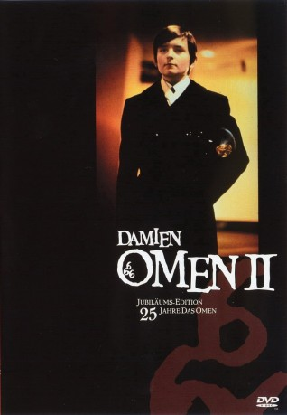

#10517 Damien - Omen II
Alternativ: Damien: Omen II (Englischer Titel)
 
 IMDB-Wertung: 6.3 / 10
IMDB-Wertung: 6.3 / 10  Metascore: 45
Metascore: 45 
Fortsetzung des Horror-Klassikers Das Omen aus dem Jahre 1978. Geheimnisvolle Todesfälle in seiner Umgebung, unerklärliche Zwischenfälle überzeugen selbst seinen Adoptivvater davon, mit Damien (inzwischen 13 Jahre alt) den Sohn des Teufels großgezogen zu haben.
Jahr: 1978
Dauer: 106 Minuten
FSK: 16
Land: USA Studio: Twentieth Century-Fox Film CorporationTonspuren: DTS - ,
Untertitel: Deutsch,
Auflösung: 1080p (1920x816) Größe: 9728 MB
Genre: Horror
Regisseur: Don Taylor, Mike Hodges
Drehbuch: Harvey Bernhard, David Seltzer, Stanley Mann, Mike Hodges
Soundtrack: Jerry Goldsmith
Darsteller:
 William Holden als Richard Thorn
William Holden als Richard Thorn- Lee Grant als Ann Thorn
- Jonathan Scott-Taylor als Damien Thorn
- Robert Foxworth als Paul Buher
 Nicholas Pryor als Charles Warren
Nicholas Pryor als Charles Warren Lew Ayres als Bill Atherton
Lew Ayres als Bill Atherton- Sylvia Sidney als Aunt Marion
 Lance Henriksen als Sergeant Neff
Lance Henriksen als Sergeant Neff- Elizabeth Shepherd als Joan Hart
- Lucas Donat als Mark Thorn
 Allan Arbus als Pasarian
Allan Arbus als Pasarian- Meshach Taylor als Dr. Kane
- James Spinks als Technician #1
- Ian Hendry als Michael (uncredited)
 Leo McKern als Carl Bugenhagen (uncredited)
Leo McKern als Carl Bugenhagen (uncredited)- Fritz Ford als Murray
- John J. Newcombe als Teddy
- John Charles Burns als Butler
- Paul Cook als Colonel
- Diane Daniels als Jane
- Robert E. Ingham als Teacher
- William B. Fosser als Minister
- Corney Morgan als Greenhouse Technician
- Russell P. Delia als Truck Driver
- Judith Dowd als Maid
- Thomas O. Erhart Jr. als Sergeant #1
- Sorin Serene Pricopie als Pasarian's Assistant
- Robert J. Jones Jr. als Tour Guide
- Rusdi Lane als Jim Gardner
- Charles Mountain als Burial Priest
- Cornelia Sanders als Young Girl
- Felix Shuman als Dr. Fiedler
- Owen Sullivan als Byron
- William J. Whelehan als Security Guard
- Gus Kaprales als Limo Driver (uncredited)
Datei: X:\2-Dilogie(N-Z)\Omen\Damien - Omen II (1978, FSK16, 1920x816).mkv seit 18.01.2019
Festplatte: HD Collection-2(A-Z)-3(A-M)
 Alle Filme aus Gruppe '2-Dilogie(N-Z)\Omen'
Alle Filme aus Gruppe '2-Dilogie(N-Z)\Omen'
- Damien - Omen II (der aktuelle Film)
- Omen, Das